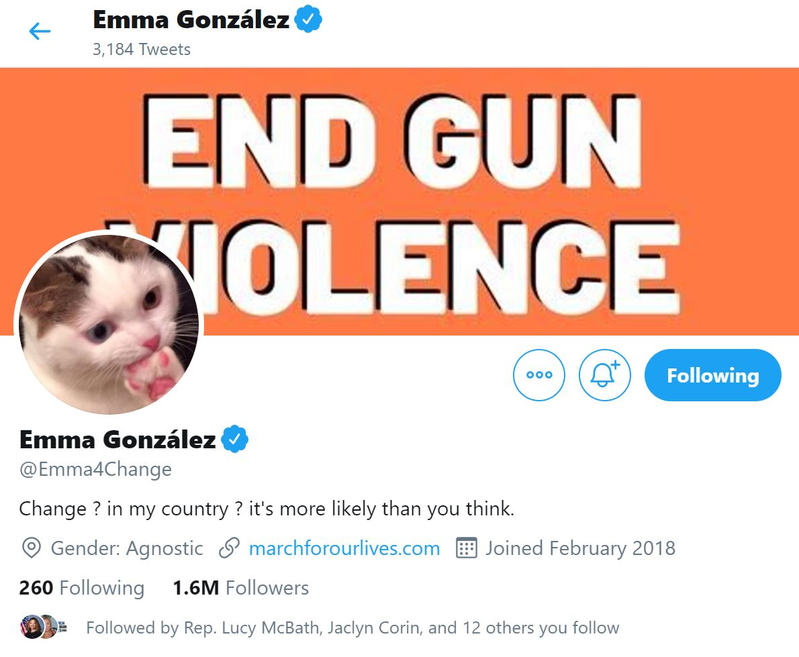

Studying March for Our Lives
An evolving project of Duke's Social Media and Social Movements Course
By Carter Zenke
Alex Brandon, Associated Press
The Spark
In the afternoon of Valentine’s Day, 2018, an expelled student of Marjory Stoneman Douglas (MSD) High School entered his former school building with an AR-15. He pulled the fire alarm, and 6 minutes and 20 second later, strolled from the premises having murdered 17 students and critically injured 17 others. The Parkland police force arrived soon afterward, in time to assess the damage but not to stop it.

From the Sun Sentinel
In Networks of Outrage and Hope, Castells calls on scholars to begin studying networked movements with the outrage that drives their mission. In the case of the movement that would originate from MSD High School, this outrage lay in the contradiction between schools as safe havens and schools as every more likely targets of mass shootings. Students, teachers, news outlets and parents, were quick to point out that this shooting was part of a long and familiar history of gun violence in the United States.
It was this outrage that drove the students of Parkland to the national media. On the morning after the shooting, David Hogg, then a senior, disobeyed his parents’ pleas to take a day off and pedaled furiously to the media trucks getting ready for a day of coverage. Emma González and Cameron Kasky joined later, the three of them forming a dominant presence in interview after interview. They would not back down from demanding action—any action—that would prevent another school from being turned into a warzone.
“We’ve seen a government shutdown, we’ve seen tax reform, but nothing to save our children’s lives. Are you kidding me? You sicken me.”
- David Hogg, on CBS's "Face the Nation"
To the broader student populace, this need for change had been clear since they first felt bullets whizzing through their hallway.
"The day after the shooting, we said something needs to happen; there needs to be a central space;
there needs to be a movement."
- Alex Wind, in the The Washington Post
They weren’t yet sure how to form a movement, but they knew they needed to share their stories. At the same time that David, Emma, and Cameron were dominating news cycles, fellow students took the opportunity to gather on Facebook in order to share their stories.
The first posts came the day after the shooting. Though there wasn’t enough time to establish a comprehensive vision for the use of media, the students of MSD knew that they needed to act fast: before the media slipped into a different cycle of coverage. Their mission was urgency.
Only three days later, the same students took to Twitter, launching the beginning of a long campaign that would come to be known as the “March for Our Lives.”
We are proud to stand with @NeverAgainMSD to say that the time has come to end gun violence and mass shootings in this country. We will come together to #MarchForOurLives
— March For Our Lives (@AMarch4OurLives) February 18, 2018
Each student of the newly formed March For Our Lives was unsure where they were going. But they knew they had to go somewhere, and that their rage at adults who had failed would drive them there.
Developing a Burning Question
My research question evolved as I engaged with media from March For Our Lives and took new ideas from course readings, in-class videos, and peer discussions. This section first outlines my final burning question, then charts how my responses to prior questions led me to it.
What are the unique strengths that youth bring to movements?
What are the unique challenges that youth face in building movements?
What can March for Our Lives, as a case study, tell us about these questions?
I settled on this set of questions because I became fascinated with the way that March for Our Lives garnered support for the anti-gun violence agenda in a way that no other movement had done before. I wanted to understand what was so effective about their strategy, as well as how their unique role as youth had advanced their cause. At the same time, I was curious about the challenges they faced in their work. What issues did they face that adults in this work did not? By answering these questions, I hoped to better understand how to support youth activism and cultivate the courage that these students have demonstrated.
To arrive at these questions, I first decided to explore the goals that March for Our Lives set for themselves. A class discussion on the differences between a movement’s actions and a movement’s desired perceptions encouraged me to also ask whether March for Our Lives’s work was true to the agenda they outlined.
Does March for Our Lives see themselves pursuing a reformist or revolutionary agenda?
Does this vision align with the actions they’ve taken?
Dave Cullen, the author of Parkland—a book about the movement’s beginnings, interviewed Dr. Ley, a professor at the University of Michigan, about the psychological side-effects of the MFOL students’ activism.
That’s what’s glorious about young people: the still-developing impulse control.
They see something, they see a cause, and they say, I’m going to do what’s right.
You’re not going to stop me.
- Dr. Alyse Ley, Michigan State University Child and Adolescent Psychiatry Specialist
If youth have a unique impulse control, might their goals reflect this? Are they more likely to be radical in their methods and ideologies? To analyze these questions, I researched the political views of youth activists within March for Our Lives and youth activists tangent to March for Our Lives’ work. I started my research with an affiliate of March for Our Lives who stood out to me for his unique position: endorsing the second amendment, and declaring himself a Republican.
Marcel for Houston
Marcel is a 17-year-old running for Houston City Council. He became an advocate for ending gun violence after experiencing a mass shooting in his hometown. In a video for Now This News, a company known for their short clips supporting liberal causes, Marcel made clear that being part of March for Our Lives did not necessarily contradict his conservative political views.
“I am pro-Second Amendment, anti-people getting killed senselessly... It’s not a political issue. It shouldn’t be. It’s a human one.”
- Marcel McClinton, on Now This News
In interviews, on his website, and in guest features, Marcel shares a persona just as carefully crafted as any seasoned politician. He doesn’t shy away from the issue of gun violence, but neither does he channel the fiery demands that David Hogg displayed early after the MSD shooting. Contrary to Dr. Ley’s beliefs about youth having a developing impulse control, Marcel displays deep insight and poise. He is able to speak to conservatives who value “gun culture” but who are nevertheless concerned about the ever-rising number of lives lost to gun violence.
Studying Marcel’s campaign, I began to see March for Our Lives in a different light. Rather than making change by supporting a radical agenda, March for Our Lives appeared to be intentionally cultivating a universally appealing brand. The organization was neither conservative, centrist, nor liberal. It was capable of holding each of these ideologies at once. Later, I would be reminded of this paradoxical unification when Dr. Ghamari-Tabrizi discussed how song and poetry brought together different ideologies of Communists during the Iranian Revolution of 1979. Could March for Our Lives be a similar unifying banner?
Cameron Kasky and Emma González
I turned to analyze two of the de facto leaders of March for Our Lives, Cameron Kasky and Emma Gonzalez, to determine their own political leanings.
Cameron, in particular, often uses humor to deride Republicans. Though these tweets may not reflect his actual views (he doesn’t believe “every Republican is wrong about everything”), they convey an underlying sentiment of distaste for the party.
Not to be partisan, but literally every republican is wrong about everything and always has been!
— Cameron Kasky (@cameron_kasky) September 28, 2019
Please hire me
Notably, Cameron’s rhetoric is a stark contrast to the carefully composed messaging from March for Our Lives as they built up to their march. Though March for Our Lives students called predominantly on Republican law-makers to change their stance on gun legislation, they kept their distance from blanket statements and instead chose to target a single “non-partisan” organization: the NRA.
I cannot stress this enough- my primary vote is going to Warren.
— Cameron Kasky (@cameron_kasky) September 17, 2019
But the fact that the son of Asian immigrants is polling fourth in California is something I find very inspiring and reflective of the America I want to see.
Cameron’s more serious tweets about his politics reveal that he is advocating for fundamental, systemic change, as opposed to the mere reforms that a young candidate like Marcel might advocate for.
Emma seems to align with Cameron’s political views, though is less vocal on social media about them. The clearest indications of her views come from subtle references (“Change ? in my country ? it’s more likely than you think.”) and direct comparisons to other youth activists (like Greta Thunberg). Based on Emma’s dynamic personality at March for Our Lives rallies, it can reasonably be said that she would advocate for an overhaul of the country’s system, rather than mere gun reform.
Last night I dreamt that @GretaThunberg and I were at an event and all the adults were telling us what to say and we both started screaming at them about how they were killing the environment and the youth and how they expected us to fix everything. Love u sis üôèüèº
— Emma González (@Emma4Change) September 24, 2019
The March for Our Lives Peace Plan
Do the public personas of the March for Our Lives students match up with their declared policy objectives? The Peace Plan is a 6-point document, thoroughly researched to outline policies that have the largest potential to reduce gun violence.
Of their proposed policies, most have wide support among gun owners. For example, their proposal to implement gun licensing laws is supported by 77% of Americans and 68% of gun owners. This makes their agenda appear more reformist than revolutionary.
The most fundamental change that March for Our Lives has proposed is rethinking the 2nd amendment. However, they do not propose eradicating it from the constitution, as some have accused them of doing. Rather, they advocate merely for reinterpreting it to include a broader meaning of “safety:” one that might include addressing the way a proliferation of guns undermines this right.
March for Our Lives, as a single-issue movement, is adopting a measured stance on the changes it wants to see in order to reduce gun violence. Rather than pushing for radical change, as might be expected of youth who could “lack impulse control,” they are pushing for policies that are thoroughly research-backed and supported by the general public. By bringing the fire and passion of their youth to the support of measured policies, March for Our Lives is able to situate themselves as a universal banner for those who want to reduce gun violence in America.
What have the March for Our Lives students “given up” to pursue their activism?
Have these sacrifices contributed to their goals?
In Twitter and Tear Gas, Zeynep Tufekci articulates the concept of “capacity:” the revolutionary potential that a social movement signals to those in power. She elaborates that there are three types of capacity: narrative, disruptive, and institutional. Narrative capacity is the ability to generate arguments that are taken seriously by the general public, disruptive capacity is the ability to derail the status quo, and institutional capacity is the ability to hold elected officials accountable. Notably, capacity is signaled not through numbers, but through the way a movement handles their internalities: does the way in which they operate signal a dedication and ability to push their cause forward?
Reading about capacity and the way it is signaled allowed me to articulate a new question that had been bubbling in my head: To what extent are the students of March for Our Lives giving up their positions of privilege to create change? How dedicated are they truly to their cause? I decided to frame these questions in terms of what they had “given up” to pursue their activism. If they had “given up” the comfort, security, and stability of their arguably lavish suburban lifestyles, it may signal that they took their cause more seriously and were more willing to navigate the inevitable obstacles that would be thrown in their way.
To analyze what the March for Our Lives students had “given up,” I looked at three categories that commonly surfaced throughout my research: mental health, college decisions, and corporate endorsements.
Mental Health
When asked about how the March for Our Lives students were responding to their trauma, Dr. Ley (Professor of Adolescent Psychiatry at Michigan State University) responded that she believed their activism had allowed them to take back control over an experience that they, and the millions of other kids who live in schools, feel they have no control over. This regaining of control, she believed, was the essence of good therapy.
Leading up to the march, it did appear that the youth of March for Our Lives were taking their trauma in stride and using their collective action as a form of therapy. However, as time pressed on, scars from their experiences of activism began to show.
ya boi got depression
— Emma González (@Emma4Change) November 19, 2019
and anxiety n PTSD
— Emma González (@Emma4Change) November 19, 2019
It’s hard to be part of that kind of organization for too long without burning out. I found myself at a
point where I was rapidly cycling with my bipolar disorder, not completely aware it was happening,
not medicating, not being honest with myself about my mental health.
- Cameron Kasky, for the New York Post"
The survivors’ admissions of being mentally unwell, especially since the shooting and their subsequent activism, hint at the pain they endured to lead their movement. Early in their activism, the Parkland students were not as open about admitting this toll. Now, however, they have become more vocal about the immense amount of perseverance it took to advocate for their policy agenda.
To the people who send me death threats and messages celebrating the mass shooting at my former high school via email:
— Cameron Kasky (@cameron_kasky) September 29, 2019
Please understand that I use this email for work and school. If I have to set up threatencameronkasky@gmail.com, I will, but I really don’t want to.
On top of the mental burden of organizing, students like Cameron Kasky regularly received hate mail that further destabilized their mental well-being. The willingness to press on despite strong backlash from conservative groups points to a strong will to continue organizing. This is one example of what Tufekci labeled “positive networked internalities.”
Colleges
As the March for Our Lives students announced where they would be attending college, a debate ignited over what their college offerings said about their activism. David Hogg, for example, announced that he would be going to Harvard.
Thank you all for the well wishes, I’ll be attending Harvard in the fall with a planned major in Political Science.
— David Hogg text VOTE to 954-954 (@davidhogg111) December 22, 2018
The press subjected David to intense scrutiny, because his academic qualifications were unusually low for such an admittance. Some, like Richard Vedder, argued that Harvard was biased towards the liberal cause of March for Our Lives, and that David was unqualified to be admitted. Implicit in his suggestion was that Harvard was some kind of “reward” for aligning with the liberal social agenda. Others, like Jacob Shamsian, welcomed the decision for its focus on the holistic merits of the applicant—rather than mere performance on a standardized test like the SAT.
The image of a March for Our Lives activist going to Harvard, especially amidst concerns over their qualifications, called into question for many the extent to which David had “given up” his life for his cause. Could David truly be called an activist that was “down in the trenches,” ready to lay down his privileges for the success of the anti-gun violence movement?
Plush Endorsements
Another tarnish on March for Our Lives’ image came from the students who accepted plush endorsements from well-known corporate sponsors. Delaney Tarr, for example, became involved with American Eagle.
Over a cheerful drumbeat, while sitting in an instagram-ready room, Delaney begins a feature on her activism by saying “The only wish that I have is to be remembered as someone who made the world a better place.” She frames her activism as something that happened to her, rather than something she herself initiated. Throughout the video, it’s easy to question to what extent Delaney is in this for herself.
Though Delaney has shown her dedication to making true change through her work, her instances of sponsorships fall into what I would call “aesthetic activism.” Aesthetic activism, whether intentionally or unintentionally, focuses on projecting images that glorify the work of activism by presenting it in a charming, easily digestible format. It signals the opposite of capacity, because it reveals that the activist is more focused on a cohesive branding than on navigating the complexities and nuances of activism. While watching Delaney’s work, I became concerned that March for Our Lives was either not signalling its true capacity, or perhaps lacked deep capacity in the first place.
Paul D'Amato, Vanity Fair
The Media Theory
I developed my media theory over several stages, drawing from my work answering my evolving burning questions. Though I have outlined my final media theory in this section, I have also included each prior formulation of my ideas. My final media theory is different than ideas I had before, but these prior ideas provide evidence to support the final “iteration” of my media theory.
March for Our Lives was a test kitchen, seeing the media they created as novel recipes that could be remixed by restaurants catering to different tastes.
My final media theory compares March for Our Lives to a test kitchen, arguing that they saw their media in the same way a chef at a test kitchen sees a recipe. That is, a test recipe is a set of instructions for a new conceptual dish, created with the expectation that other chefs will remix the instructions to their own tastes while maintaining the underlying concept.
The evidence for this media theory comes not only from the media that March for Our Lives produced, but from the method with which they created it. I chose to closely analyze a single tweet that they produced, a parody of Dana Loesch, in order to articulate my final media theory.
“To every lying member of the media, to every Hollywood phony, to the role model athletes who use their free speech to alter and undermine what our flag represents…Your Time is running out. The clock starts now."
— NRATV (@NRATV) March 4, 2018
–@DLoesch #Oscars90 pic.twitter.com/SDVjeTxyfB
"To every spokeswoman with an hourglass who uses free speech to alter and undermine what our flag represents...Your Time is running out. The clock starts now."
— Sarah Chadwick (@Sarahchadwickk) March 6, 2018
-@sarahchad_ #MarchForOurLives pic.twitter.com/k29FB2vHPI
In the face of a high-profile public attack on their values, the March for Our Lives students had several options. Being close to several national news outlets, they could have written an op-ed, scheduled an interview, or appeared on national television. Instead, however, the students deliberately chose an alternative route. They chose to “meme” Dana Loesch, with the expectation that it would spread their message to young people in a more relatable way.
Though some might read their choice to parody Dana Loesch as a quick reaction that happened to go viral, I argue that much deliberation went into the creation of this parody. Behind this single tweet are hours of debate, carefully choreographed videograpy, and tightly vetted script-writing. It is this in this deliberation that we can determine how March for Our Lives saw their media.
In Dave Cullen’s interviews with the Parkland students, he notes that they viewed social media as the place in which their generation lives. However, the Parkland students didn’t just believe in social media’s capacity to reach a wide audience. More importantly, they believed in its capacity for participatory media, whereby others could view, remix, and reshare their work.
“They were pumping out clever, shareable content that could be customized to Twitter, Instagram, or Snapchat, and they were prepping for a YouTube launch. ‘That’s where our generation lives,’ Dylan Baierlein said.
- Dave Cullen, in his book Parkland
Though their generation grew up with participatory media, creating it does not come naturally. The March for Our Lives students realized that they would need to intentionally create media that could go viral. In practice, they established working groups to vet the media that they would eventually post. Any idea about a new post would first have to be approved by every member of the March for Our Lives steering committee. Only then could it move into the production phase.
Once in the production phase, creating the media was a team effort. The group took pride in the way their collaboration enabled viral media without the budget of the NRA.
Our budget: 0$@NRA how much did y’all spend? @sarahchad_ @Emma4Change @dylbaier @firepfeiffer1 @sofiewhitney @Ryan_Deitsch pic.twitter.com/9YX5WlevGo
— Adam Alhanti (@AAlhanti) March 7, 2018
please let it be known that i was the boom operator for this https://t.co/QBPhTsVNt9
— Emma González (@Emma4Change) March 6, 2018
This kind of participatory media had a purpose: the students wanted to bring as many anti-gun violence advocates into the movement as possible. Dave Cullen notes that, early in their planning process, the March for Our Lives students met with The Peace Warriors, a group out of Chicago focused on reducing urban gun violence. From their meetings, they realized the necessity of forming coalitions across different experiences of gun violence.
"We know that the reason that we're getting this attention is because we're privileged white kids. If you look at Chicago, there's such a high level of gun violence. But that's not getting the attention that this is getting because we're in such a nice area."
- Delaney Tarr, in Parkland
As they created their media, they had this idea of unifying banner at the forefront of their process. How could they create media that everyone would be moved by? The answer, they decided, was becoming a test kitchen. Their recipes for solving gun violence would be spread around the country, with each restaurant adapting it to their own needs.
March for Our Lives saw media as a siren, believing their young voices would amplify it further.
Before I came to recognize March for Our Lives’ deliberate strategies to produce remixable content, I thought that they were viewing their media as a siren that they could amplify with their young voices.
I came to this preliminary idea by watching the early ways in which they showcased their grief from the trauma that had occurred at their school. To me, it seemed that they were holding on to the belief that solutions to gun violence had already been devised. If they could only share their grief and outrage, these solutions might be more quickly implemented.
"I'm supposed to be recovering ... and I can't do that if these things are still going to be happening."
— CNN (@CNN) March 23, 2018
Using cell phones, six Parkland survivors chronicled their lives in the weeks after the shooting. Their stories tonight, 9p ET on CNN #ParklandDiaries https://t.co/FHVLh5RY5K pic.twitter.com/7NBh50lY3Z
Indeed, their early media is characterized by a certain loudness. With bright colors, authoritative stances, and generous use of capitalization, they give off the impression that they are screaming at adults to change the mechanisms that led to their tragedy.

Today, we grab our signs, we lace our shoes, and we get ready to roar. See ya there. #MarchForOurLives
— Delaney Tarr (@delaneytarr) March 24, 2018
Still seeing my shooter’s name and face in the news.
— Cameron Kasky (@cameron_kasky) June 21, 2018
In case we haven’t made it abundantly clear:
STOP SAYING THEIR NAMES.
STOP SHOWING THEIR FACES.
YOU ARE GIVING THEM EXACTLY WHAT THEY WANT.
Over time, though, they began to realize that no matter how loud a siren is, some people will always ignore it. This realization could have been one preliminary revelation that led to their later adoption of participatory media—in which the “siren” can be adapted to radiate many different “pitches.”
Been a hard weekend for me. I need to stop holding the world to such a high standard & realize that not everything comes easily and not all hard work pays off. You trip, stumble, and fall. I can’t keep expecting the world to be easy & I can’t keep expecting everything to pay off.
— Cameron Kasky (@cameron_kasky) November 4, 2018
— Scott Bryan (@JSBTLBCNB1210) March 24, 2018
Ultimately, this media theory did not satisfy me because I thought it missed the many ways that Parkland students were innovating with their tactics. They weren’t simply youth elevating an already established conversation. They were changing that conversation.
March for Our Lives saw their media as the face of the anti-gun violence movement, whereas other groups coordinated the body.
With the idea that movements have different types of capacity still in my head, I explored groups that March for Our Lives was affiliated with. As I researched the accomplishments of these groups, I realized that they were the ones with the stronger institutional and disruptive capacity. It appeared that March for Our Lives was outsourcing their real political work to those who might be deemed more capable: adults, law school students, and political action committees. In the meantime, they were focusing on rallying people around the idea that their youth activism was novel and powerful.
I ultimately tossed aside this idea as a media theory because I saw that March for Our Lives truly wanted to see themselves as having institutional and disruptive capacity. It was not that they were attempting to only become the face of the anti-gun violence movement, it was that they had been placed in that role as a result of their youth. This idea seemed to fit more as a potential thesis to the final burning question I had developed earlier.
Jeffery Salter, Smithsonian Magazine
The Thesis
By exploiting their generation’s intrinsic understanding of participatory media, the students of March for Our Lives electrified the narrative capacity of the anti-gun violence movement.
Nevertheless, their youth has embedded ageism’s social and political barriers into their mission to transform this narrative capacity into an institutional one.
Assessing Youth's Strengths
The first part of my thesis, in which I assess youth’s unique strengths, developed from the intellectual work I had done surrounding my media theory. The more I saw the ingenuity of March for Our Lives’ participatory media strategy, the more I came to believe that their youth uniquely enabled it. My thoughts were bolstered when I read By Any Media Necessary: The New Youth Activism, and found the authors explaining that young people, in general, are choosing to co-develop narratives rather than take them in from mass media.
"Young people are not simply accepting an agenda constructed by mass media for their consumption, rather they are actively co-constructing the concents of the civic imagination through networked communications."
- By Any Media Necessary: The New Youth Activism
But is this trend toward participatory media a result of youth itself? Or are the Parkland students merely lucky enough to grow up in an age in which it is relatively easy to create participatory media?
To answer these questions, I thought about how both youth and adults are engaging with social media. Both young and old activists with access to the internet can see the benefits of participatory media. The ease with which participatory media can be created is certainly a product of the digital age, and not of youth itself. At the same time, it takes a deliberate effort to channel this experience into the creation of participatory content. Though all are living in the age of participatory media, few have leveraged it as the Parkland students have. This spark to try something new is a product of youth, and it is what led the March for Our Lives students toward their ability to shift how America thought about its gun violence epidemic.
Assessing Youth's Challenges
Though March for Our Lives had a remarkable capacity to create narrative change, they still face long-standing barriers to greater depth of political participation. For example, although March for Our Lives received huge donations from big-name celebrities, these funds were only used to support their march - not to support them in advocating for legislation. In addition, they faced questions about whether they should be the ones managing the nearly $3.5 million they had raised for their march.
"They even used their parents. The kids rarely sanctioned that, because they understood the power of images. Parents at the microphone would undercut the message that this was all them. But they faced a countervailing narrative: Should two dozen high school kids really be handling $3.5 million, an amount growing by the day?"
- Dave Cullen, in his book Parkland
March for Our Lives is adamant that youth should be creating institutional change. They not only believe that youth voice should change policy, but that youth are more capable than adults at creating policies to serve the people. Part of this capability, they believe, comes from their unique perspective on how to use participatory media.
Young people running across the country aren’t going to have multi-million dollar donors, but we can use the one thing that we do have, which is creativity and twitter and instagram. In fact, we can do it better than them.
- David Hogg, in his web series Party Crashers
But is a knack for participatory media all it takes to effect change? In a political system dominated by cash and those with it, the reality is not always so ideal. While March for Our Lives has effected narrative change by sharing their youth voices, they themselves have yet to make a valid push for political change. Instead, established organizations run by adults, like Moms Demand Action, are seen as taking the lead on policy change. They are outspending the NRA and influencing key elections.
WE DID IT!!! @everytown was the largest outside donor in Virginia, outspending the @NRA 8 to 1. And @MomsDemand volunteers outmaneuvered the NRA with over 100,000 calls, door knocks and texts to voters. Tonight we beat the @NRA in their home state. #electionday #valeg https://t.co/jY7yrvXsUN
— Shannon Watts (@shannonrwatts) November 6, 2019
While Moms Demand Action and Everytown are able to hire full-time, experienced policy directors, March for Our Lives remains only capable of supporting part-time staff with little experience. In an advertisement for an open policy directorship, they stated that the position would be unpaid and would max out at part-time. This disparity in funding, and the talent it can buy, leads to a disparity in the political outcomes that March for Our Lives is able to create.

Even those who are taking charge of legal proceedings directly affiliated with March for Our Lives are not those usually classified as “youth.” In a recent Supreme Court case in which March for Our Lives could have achieved one of their Peace Plan objectives, re-examining District v. Heller, they relied on Yale Law students with the expertise to compile a compelling amicus brief. Though deeply concerned about projecting a youth-led image, March for Our Lives realizes it must rely on expertise out of reach to the everyday high school student.
To be sure, part of what has allowed March for Our Lives to generate such a strong narrative capacity has been their attempts to bring about policy change. When they drove to Tallahassee to meet with state representatives, they signaled to the world that they meant business.
Unfortunately, these attempts at political change have stalled. March for Our Lives has realized they need to look elsewhere for institutional capacity—either to their partners in the anti-gun violence movement, or to a new asset they may be able to cultivate.
A future institutional capacity?
This new asset is a new generation of youth. March for Our Lives is not solely a movement about narrative building. It intends to be, and can be, a force for mobilizing the next political force in the country: youth voters.
300%. Youth voters showed up. https://t.co/VxGqQZ7Xio
— March For Our Lives (@AMarch4OurLives) November 6, 2019
The narrative that youth can change the country has been spread by March for Our Lives, and may very well be impacting the percentage of youth voters that turn out to elections. Given that these youth are much more likely to vote for gun control measures, they may be the greatest asset to March for Our Lives’ political change agenda. As the country nears the 2020 election, it will be intriguing to see how youth make their voices heard. March for Our Lives may still have their greatest accomplishments ahead of them.